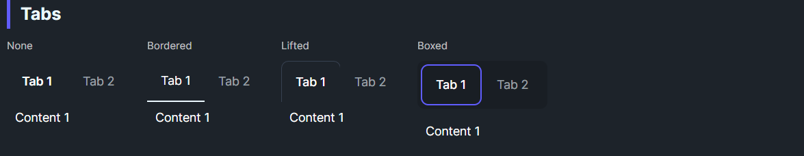

DaisyTabs is a styled TabControl with four header variants (None, Bordered, Lifted, Boxed) and size presets. It uses a WrapPanel for tab headers and supports standard tab behaviors (SelectedIndex, Items, TabItem content).
| Variant | Description |
|---|---|
| None | Text-only tabs; selected text is bold; no underline/box. |
| Bordered (default) | Underline on hover/selected. |
| Lifted | Folder-tab style with top/sides border; selected tab has background. |
| Boxed | Rounded pills with visible borders; selected uses primary border. |
| Size | Padding | Font Size |
|---|---|---|
| ExtraSmall | 8,4 | 10 |
| Small | 12,6 | 12 |
| Medium (default) | 16,8 | 14 |
| Large | 20,12 | 18 |
Control tab sizing behavior to prevent layout shifts or create uniform navigation.
| Property | Type | Default | Description |
|---|---|---|---|
| TabWidthMode | Enum | Auto | Auto, Equal, or Fixed |
| TabWidth | double | NaN | Fixed width when mode is Fixed |
| TabMinWidth | double | 0 | Minimum width for each tab |
| TabMaxWidth | double | ∞ | Maximum width for each tab |
| Mode | Behavior |
|---|---|
| Auto | Each tab sizes to fit its content (default) |
| Equal | All tabs use the width of the widest tab |
| Fixed | All tabs use the specified TabWidth value |
<!-- Bordered (default) -->
<controls:DaisyTabs>
<TabItem Header="Tab 1"><TextBlock Text="Content 1" Margin="8" /></TabItem>
<TabItem Header="Tab 2"><TextBlock Text="Content 2" Margin="8" /></TabItem>
</controls:DaisyTabs>
<!-- Boxed -->
<controls:DaisyTabs Variant="Boxed">
<TabItem Header="Tab 1"><TextBlock Text="Content 1" Margin="8" /></TabItem>
<TabItem Header="Tab 2"><TextBlock Text="Content 2" Margin="8" /></TabItem>
</controls:DaisyTabs>
<!-- Lifted, small -->
<controls:DaisyTabs Variant="Lifted" Size="Small">
<TabItem Header="Tab 1"><TextBlock Text="Content 1" Margin="8" /></TabItem>
<TabItem Header="Tab 2"><TextBlock Text="Content 2" Margin="8" /></TabItem>
</controls:DaisyTabs>
<!-- Equal width tabs (prevents layout shift) -->
<controls:DaisyTabs Variant="Boxed" TabWidthMode="Equal">
<TabItem Header="Short"><TextBlock Text="Content 1" Margin="8" /></TabItem>
<TabItem Header="Much Longer Tab"><TextBlock Text="Content 2" Margin="8" /></TabItem>
<TabItem Header="Med"><TextBlock Text="Content 3" Margin="8" /></TabItem>
</controls:DaisyTabs>
<!-- Fixed width tabs -->
<controls:DaisyTabs Variant="Boxed" TabWidthMode="Fixed" TabWidth="120">
<TabItem Header="Tab 1"><TextBlock Text="Content 1" Margin="8" /></TabItem>
<TabItem Header="Tab 2"><TextBlock Text="Content 2" Margin="8" /></TabItem>
</controls:DaisyTabs>
<!-- Auto with max width constraint -->
<controls:DaisyTabs TabMaxWidth="150">
<TabItem Header="This is a very long tab header"><TextBlock Text="Content" Margin="8" /></TabItem>
<TabItem Header="Short"><TextBlock Text="Content" Margin="8" /></TabItem>
</controls:DaisyTabs>DaisyTabs supports two different tab-color systems:
DaisyTabs.TabPaletteColor.DaisyTabs.TabColor if you want colors to change with themes.Assign a palette color to individual tabs using the DaisyTabs.TabPaletteColor attached property. Palette colors are fixed and do not change with themes.
| Palette Value | Description |
|---|---|
| Default | No custom color |
| Purple | Purple |
| Indigo | Indigo |
| Pink | Pink |
| SkyBlue | Light blue / sky blue |
| Blue | Blue |
| Lime | Lime (highlighter green) |
| Green | Green |
| Yellow | Yellow |
| Orange | Orange |
| Red | Red |
| Gray | Gray |
To reset a tab's palette color, set TabPaletteColor to Default:
// Reset programmatically
DaisyTabs.SetTabPaletteColor(tabItem, DaisyTabPaletteColor.Default);<!-- Reset in XAML -->
<TabItem Header="My Tab" controls:DaisyTabs.TabPaletteColor="Default" />When using the context menu, clicking the hollow dot ("Default") resets the tab color.
<!-- Direct TabItem usage with palette colors -->
<controls:DaisyTabs Variant="Boxed">
<TabItem Header="Home" controls:DaisyTabs.TabPaletteColor="Blue">
<TextBlock Text="Home content" Margin="8" />
</TabItem>
<TabItem Header="Settings" controls:DaisyTabs.TabPaletteColor="Purple">
<TextBlock Text="Settings content" Margin="8" />
</TabItem>
<TabItem Header="Errors" controls:DaisyTabs.TabPaletteColor="Red">
<TextBlock Text="Error log" Margin="8" />
</TabItem>
</controls:DaisyTabs>
<!-- ItemsSource with palette colors via ItemContainerTheme -->
<controls:DaisyTabs ItemsSource="{Binding Tabs}" Variant="Bordered">
<controls:DaisyTabs.ItemContainerTheme>
<ControlTheme TargetType="TabItem" BasedOn="{StaticResource {x:Type TabItem}}">
<Setter Property="(controls:DaisyTabs.TabPaletteColor)"
Value="{Binding Color}" />
</ControlTheme>
</controls:DaisyTabs.ItemContainerTheme>
</controls:DaisyTabs>If you want tab colors to follow the active theme, use DaisyTabs.TabColor with DaisyColor values:
| DaisyColor | Description |
|---|---|
| Default | No semantic color |
| Primary | Theme primary |
| Secondary | Theme secondary |
| Accent | Theme accent |
| Neutral | Theme neutral |
| Info | Theme info |
| Success | Theme success |
| Warning | Theme warning |
| Error | Theme error |
Enable a right-click context menu on tabs with close actions and color selection. The menu is off by default and only raises events/callbacks - your app handles the actual tab manipulation.
| Property | Type | Default | Description |
|---|---|---|---|
| EnableTabContextMenu | bool | false | Shows context menu on right-click |
When enabled, right-clicking a tab shows:
DaisyTabs raises events and supports optional callbacks for each action. Use events for standard .NET patterns or callbacks for simpler inline wiring.
| Event | Callback Property | EventArgs | Description |
|---|---|---|---|
| CloseTabRequested | CloseTabCallback | DaisyTabEventArgs | User requested closing a tab |
| CloseOtherTabsRequested | CloseOtherTabsCallback | DaisyTabEventArgs | User requested closing other tabs |
| CloseTabsToRightRequested | CloseTabsToRightCallback | DaisyTabEventArgs | User requested closing tabs to the right |
| TabPaletteColorChangeRequested | TabPaletteColorChangeCallback | DaisyTabPaletteColorChangedEventArgs | User selected a new palette color |
| TabColorChangeRequested | TabColorChangeCallback | DaisyTabColorChangedEventArgs | User selected a new semantic color (theme-aware) |
TabItem – The TabItem controlTabIndex – Index in the Items collectionDataItem – The bound data item (if using ItemsSource)NewColor – The selected DaisyTabPaletteColor valueNewColor – The selected DaisyColor value<controls:DaisyTabs x:Name="DocumentTabs"
Variant="Boxed"
EnableTabContextMenu="True"
CloseTabRequested="OnCloseTab"
CloseOtherTabsRequested="OnCloseOtherTabs"
TabPaletteColorChangeRequested="OnTabPaletteColorChange">
<TabItem Header="Document 1"><TextBlock Text="Content 1" /></TabItem>
<TabItem Header="Document 2"><TextBlock Text="Content 2" /></TabItem>
<TabItem Header="Document 3"><TextBlock Text="Content 3" /></TabItem>
</controls:DaisyTabs>
<!-- Toast for feedback -->
<controls:DaisyToast x:Name="TabToast"
HorizontalAlignment="Center"
VerticalAlignment="Bottom" />
<!-- Modal for confirmations -->
<controls:DaisyModal x:Name="ConfirmModal" IsOpen="False">
<StackPanel Spacing="16">
<TextBlock x:Name="ConfirmText" FontWeight="SemiBold" />
<StackPanel Orientation="Horizontal" Spacing="8" HorizontalAlignment="Right">
<controls:DaisyButton Content="Cancel" Click="OnCancelConfirm" />
<controls:DaisyButton Content="Close Tabs" Variant="Error" Click="OnConfirmClose" />
</StackPanel>
</StackPanel>
</controls:DaisyModal>// Code-behind example
private void OnCloseTab(object? sender, DaisyTabEventArgs e)
{
// Remove the tab from Items
DocumentTabs.Items.Remove(e.TabItem);
// Show feedback via DaisyToast
TabToast.Items.Add(new DaisyAlert
{
Content = $"Closed '{e.TabItem.Header}'",
Variant = DaisyAlertVariant.Info
});
}
private DaisyTabEventArgs? _pendingCloseArgs;
private void OnCloseOtherTabs(object? sender, DaisyTabEventArgs e)
{
// Show confirmation via DaisyModal
_pendingCloseArgs = e;
var otherCount = DocumentTabs.Items.Count - 1;
ConfirmText.Text = $"Close {otherCount} other tab(s)?";
ConfirmModal.IsOpen = true;
}
private void OnConfirmClose(object? sender, RoutedEventArgs e)
{
if (_pendingCloseArgs != null)
{
var keepTab = _pendingCloseArgs.TabItem;
var toRemove = DocumentTabs.Items.OfType<TabItem>()
.Where(t => t != keepTab).ToList();
foreach (var tab in toRemove)
DocumentTabs.Items.Remove(tab);
DocumentTabs.SelectedItem = keepTab;
}
ConfirmModal.IsOpen = false;
_pendingCloseArgs = null;
}
private void OnCancelConfirm(object? sender, RoutedEventArgs e)
{
ConfirmModal.IsOpen = false;
_pendingCloseArgs = null;
}
private void OnTabPaletteColorChange(object? sender, DaisyTabPaletteColorChangedEventArgs e)
{
// Color is already applied to the attached property.
// Optionally persist it:
// _settings.SaveTabColor(GetTabKey(e.TabItem), e.NewColor);
}DaisyTabs does not persist tab state itself. Instead, use the callbacks to save/load tab colors or other state via your app's settings or DI services.
// In your App or ViewModel startup:
public void InitializeTabs(DaisyTabs tabs, ITabStateService stateService)
{
// Load saved colors when tabs are created
foreach (var tab in tabs.Items.OfType<TabItem>())
{
var key = GetTabKey(tab);
var savedColor = stateService.GetTabColor(key);
if (savedColor.HasValue)
DaisyTabs.SetTabPaletteColor(tab, savedColor.Value);
}
// Save colors when changed
tabs.TabPaletteColorChangeRequested += (_, e) =>
{
var key = GetTabKey(e.TabItem);
stateService.SaveTabColor(key, e.NewColor);
};
}
private string GetTabKey(TabItem tab)
{
// Use tab header, data context ID, or other unique identifier
return tab.Header?.ToString() ?? tab.GetHashCode().ToString();
}HeaderTrailingContent places custom content to the right of the tab headers, inside the header container. HeaderTrailingContentTemplate supports data objects and bindings.
The header reserves space for this content; the tab strip uses the remaining width.
An empty slot has no margin or layout effect.
<daisy:DaisyTabs Variant="Bordered">
<daisy:DaisyTabs.HeaderTrailingContent>
<daisy:DaisyButton Content="Refresh" Variant="Ghost" Size="Small" Click="OnRefresh" />
</daisy:DaisyTabs.HeaderTrailingContent>
<StackPanel>
<TabViewItem Header="Summary"><TextBlock Text="Summary content" /></TabViewItem>
<TabViewItem Header="Details"><TextBlock Text="Details content" /></TabViewItem>
</StackPanel>
</daisy:DaisyTabs>DaisyTabHeaderTrailingMargin sets the space before the slot. Its default is 8,0,0,0.
TabWidthMode, TabMinWidth and TabMaxWidth keep their behavior. Headers wider than the available area are clipped before the slot; the slot does not add overflow scrolling.
The header Border is named PART_HeaderContainer and the slot PART_HeaderTrailingContent (a ContentPresenter).
If ShowHeaderButtons is true and HeaderTrailingContent is null, DaisyTabs creates a DaisyTabsHeaderButtons instance and shows it in the slot.
HeaderButtons exposes this instance immediately. Both button types start hidden. Configure the instance to show navigation, the view menu, or both.
<daisy:DaisyTabs x:Name="RecordTabs" Variant="Boxed" ShowHeaderButtons="True">
<StackPanel>
<TabViewItem Header="Records"><TextBlock Text="Record content" /></TabViewItem>
<TabViewItem Header="Notes"><TextBlock Text="Notes content" /></TabViewItem>
</StackPanel>
</daisy:DaisyTabs>var buttons = RecordTabs.HeaderButtons!;
buttons.ShowNavigationButtons = true;
buttons.ShowViewMenuButton = true;
buttons.Views = new List<DaisyTabView>
{
new() { Id = "summary", Name = "Summary" },
new() { Id = "details", Name = "Details" }
};
buttons.ActiveViewId = "summary";
buttons.ViewSelected += OnViewSelected;
void OnViewSelected(object? sender, DaisyTabViewEventArgs e)
{
if (sender is DaisyTabsHeaderButtons source)
source.ActiveViewId = e.Id;
}Custom trailing content takes precedence. If the slot contains custom content, ShowHeaderButtons leaves it in place.
HeaderButtons remains null until DaisyTabs creates the built-in instance.
Once created, the instance retains its settings and subscriptions while hidden or replaced by custom content.
Setting ShowHeaderButtons to false removes only the built-in instance from the slot.
Unlike Flowery.NET, HeaderTrailingContent stays null while the built-in group is shown: WinUI has no SetCurrentValue, and writing the property would replace a binding on it.
The group also works directly in HeaderTrailingContent or in a toolbar.
See DaisyTabsHeaderButtons for commands, events, collection updates, and scaling.
Tab headers show WinForms-style mnemonics: & underlines the access character and && is a literal &. Header keeps the markers, and the header button's automation name is the display text. It is display only, so select the tab from your own Alt+key handling. See DaisyMnemonicText.
<daisy:DaisyTabs Variant="Boxed">
<StackPanel>
<TabViewItem Header="&Texte" />
<TabViewItem Header="Save && Exit" />
</StackPanel>
</daisy:DaisyTabs>Size to match surrounding controls; Small/XS for toolbars, Large for hero sections.Padding on DaisyTabs or inside each TabItem as needed.EnableTabContextMenu="True". Wire events to handle actions in your app.DaisyTabs.SetTabPaletteColor() (palette) or DaisyTabs.SetTabColor() (semantic/theme-aware).DaisyTabs is designed as a styling + callback control, not a document manager. It:
For richer "document tabs" behavior (close buttons on each tab, dirty indicators, drag-to-reorder, overflow handling), consider creating a dedicated DaisyDocumentTabs control that wraps TabControl and owns document-specific behaviors.